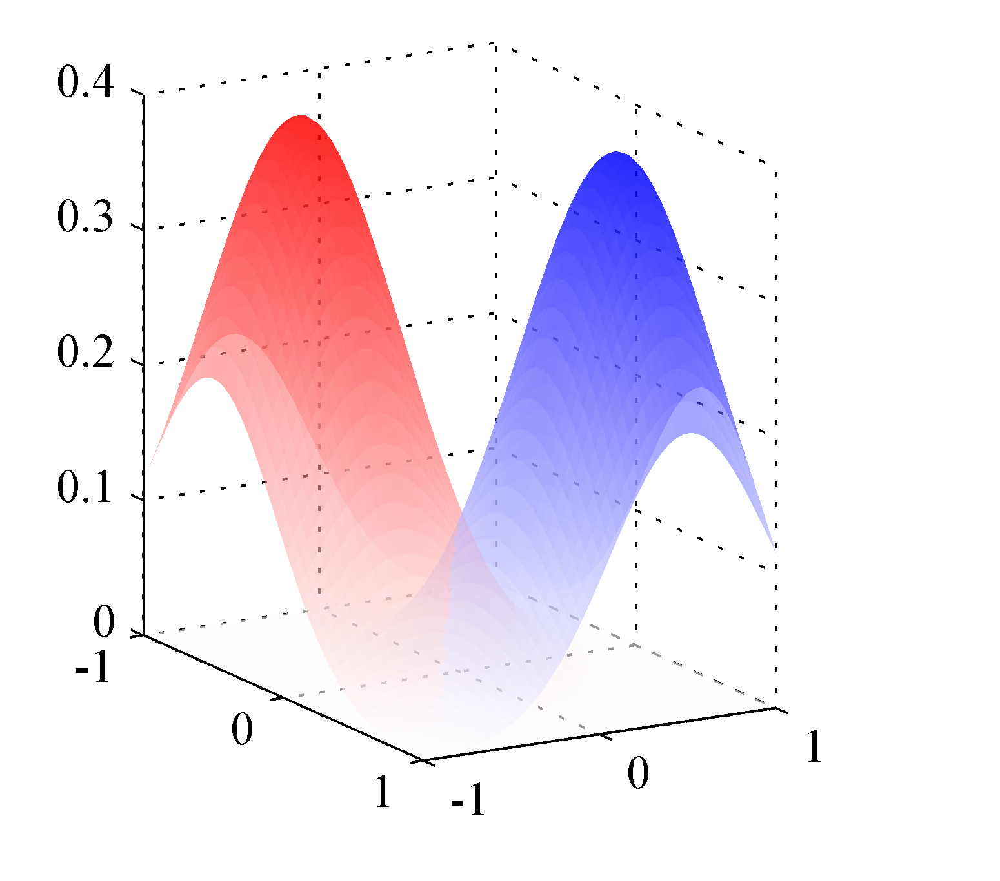
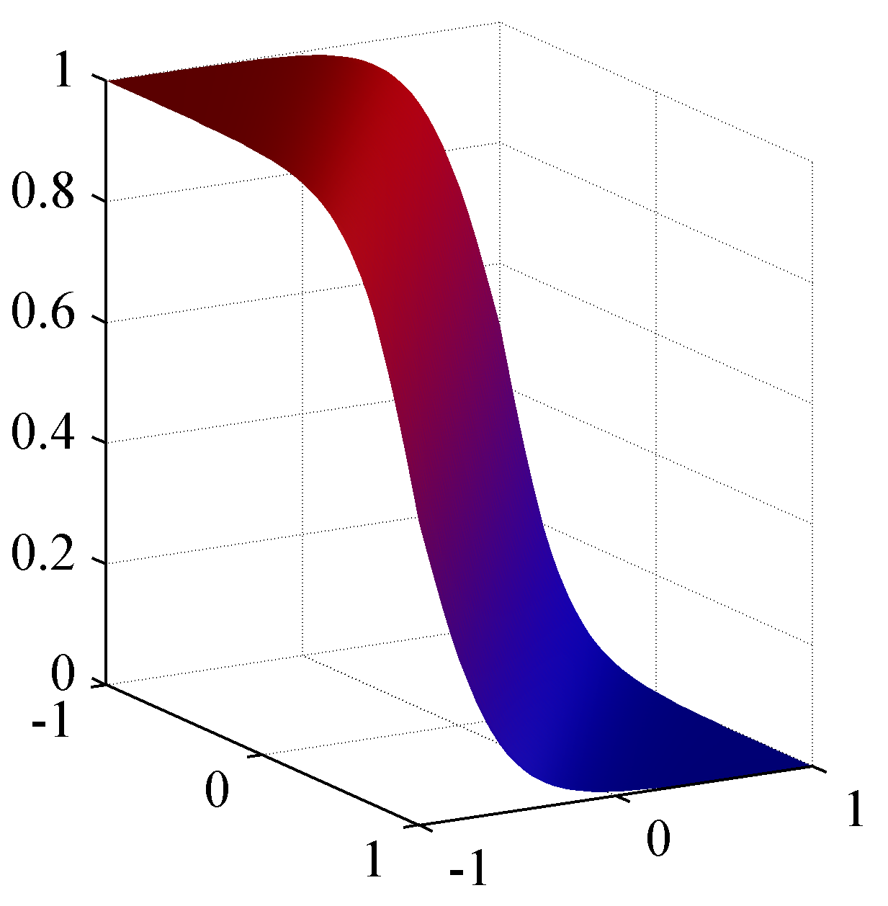

Logistic Regression
Logistic regression is used in machine learning extensively - every time we need to provide probabilistic semantics to an outcome e.g. predicting the risk of developing a given disease (e.g. diabetes; coronary heart disease), based on observed characteristics of the patient (age, sex, body mass index, results of various blood tests, etc.), whether an voter will vote for a given party, predicting the probability of failure of a given process, system or product, predicting a customer’s propensity to purchase a product or halt a subscription, predicting the likelihood of a homeowner defaulting on a mortgage. Conditional random fields, an extension of logistic regression to sequential data, are used in Natural Language Processing (NLP).
Binary case
If we consider the two class problem, we can write the posterior probability as,
$$p(\mathcal{C}_1|\mathbf{x}) = \frac{p(\mathbf{x}|\mathcal{C}_1) p(\mathcal{C}_1)}{p(\mathbf{x}|\mathcal{C}_1) p(\mathcal{C}_1) + p(\mathbf{x}|\mathcal{C}_2) p(\mathcal{C}_2)} = \frac{1}{1 + \exp(-\alpha)} = \sigma(\alpha)$$
where $\alpha = \ln \frac{p(\mathbf{x}|\mathcal{C}_1) p(\mathcal{C}_1)}{p(\mathbf{x}|\mathcal{C}_2) p(\mathcal{C}_2)}$ and $\sigma$ is given by the logistic function we met in probability review.
Given the posterior distribution above we have for the specific linear activation,
$$p(\mathcal{C}_1|\mathbf{x}) = \sigma(\mathbf{w}^T \mathbf{x})$$
This model is what statisticians call logistic regression - despite its name its a model for classification. The model has significant advantages in that it does require the estimation of far fewer parameters compared to the case where the class conditional distributions involved in the posterior were parametric. For example if we had Gaussian class conditionals we would had to estimate (using Maximum Likelihood) their parameters $\mathbf \mu$ and $\mathbf \Sigma$ that grow quadratically to the number of features $n$. With logistic regression we only have an evident linear relationship between parameters and features.
The figure below shows the corresponding posterior distribution $p(\mathcal{C}_1|\mathbf{x})$
 The class-conditional densities for two classes, denoted red and blue. Here the class-conditional densities $p(\mathbf{x}|\mathcal{C}_1)$ and $p(\mathbf{x}|\mathcal{C}_2)$ are Gaussian
 The corresponding posterior probability for the red class, which is given by a logistic sigmoid of a linear function of $\mathbf{x}$.
As we said, with logistic regression we skip the assumption about the class-conditional densities as they add parameters to our problem that grow quadratic to the number of dimensions and we attempt to find the $n$ parameters of the model directly (the number of features) and sure enough we will use ML to do so.
By repeating the classical steps in ML methodology i.e. writing down the expression of the likelihood function (this will now be a product of binomials), we can write down the negative log likelihood function as,
$$L(\mathbf{w}) = - \ln p(\mathbf{y},\mathbf{w}) = - \sum_{i=1}^m {y_i \ln \hat{y}_i + (1-y_i) \ln (1-\hat{y}_i) }$$
which is called cross entropy error function - probably the most widely used error function in classification due to its advantages such as its probabilistic and information theoretic roots as well as its shape shown in the figure below. Sometimes it is also called log-loss.

Minimizing the error function with respect to $\mathbf{w}$ by taking its gradient
$$\nabla L = \sum_{i=1}^m (\hat{y}_i - y_i) x_i$$
that defines the batch gradient decent algorithm. We can then readily convert this algorithm to SGD by considering mini-batch updates.